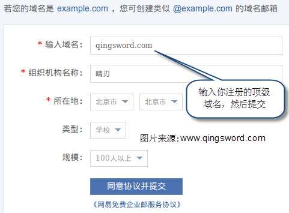
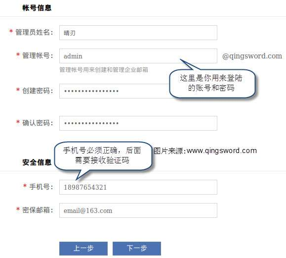
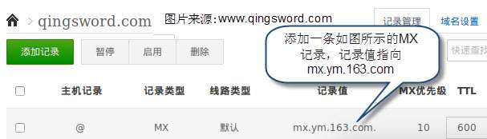
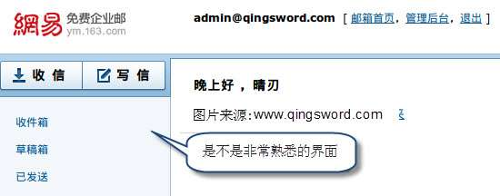

使用网易免费企业邮创建专属域名邮箱
引言
喜欢建站的朋友可能有过这样的经历，我们购买国外的一些网站空间，他们虽然提供了email服务，但及其不稳定，偶尔会遇到邮件被退回的情况，非常尴尬；这篇文章给大家介绍通过"网易免费企业邮"创建自己独立域名邮箱的方法。
文章目录
0×1.注册网易免费企业邮
首先到[网易免费企业邮官方网站]，点击"免费创建"，创建过程如下图所示：
 点击免费获取验证码，然后查看手机消息，输入发给你的验证码。
"验证域名MX记录"这一步暂时不用管，直接点"下一步"，会提示你创建成功，使用你刚才创建的域名邮箱和密码登陆。
登陆后会有个实名认证，点击认证后会让你输入姓名和身份证。
0×2.修改MX记录并验证身份
确保实名认证输入无误后，接着登陆你域名的DNS管理页面，添加一条MX记录指向，如果存在旧的MX记录，建议暂停或者删除。
修改后稍等一会，等待解析生效后，回到认证界面，点击MX记录后面的验证即可通过。
通过后会进入域邮箱管理界面，在这个界面中可以添加新成员，也可以点击邮箱后面的登陆，进入管理员的域名邮箱：
